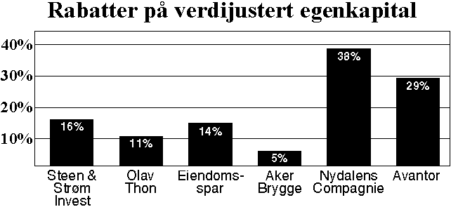

![[Forrige artikkel]](/me/ts/ne/gifs/prev.gif)
![[NE hjemmeside]](/me/ts/ne/gifs/ne-small.gif)
![[Neste artikkel]](/me/ts/ne/gifs/next.gif)
Av Lars Elton
Det begynner å bli lenge siden miljøbegrepet spredte seg i alle deler av samfunnet. Likevel virker det ikke som betydningen av begrepet er trengt inn i eiendomsbransjen i sin fulle bredde. er fortsatt synonymt med luftkvalitet, møbler og andre håndgripelige verdier. Hva som finnes av skjult forurensning, representerer en av eiendomsbransjens største utfordringer.
Temaet ble virkelig satt på dagsorden da konsekvenser knyttet til forurenset grunnvann tidligere i år ble tatt bredt opp i markedsrapporten til nnm/nnm.htm">Norsk NæringsMegling (NNM).
Det var prosjektsjef Erik Sillerud i DnB Eiendom som reiste problemstillingen på Norske Siviløkonomers Forenings næringseiendomsseminar på Grand Hotel nylig. Han mener at spørsmålet rundt eiendomsbransjens tikkende miljøbomber er ignorert i så stor grad at bransjen kan komme til å gå på en mine hvilken dag som helst.
Vår lille spørrerunde blant deltagerne avslørte at svært få reagerte på problemstillingen i nevneverdig grad.
- Interessant, men i liten grad et problem som angår oss, var den gjengse reaksjonen vi fikk. NæringsEiendom følger opp dette temaet i neste utgave av bladet.
Finansanalytiker Hege Bømark i Orkla Finans drev folkeopplysning, og ga oppskriften på hvordan og hvorfor man skal kjøpe eiendom gjennom aksjemarkedet. De børsnoterte eiendomsselskapene ble delt i tre segmenter etter eiendomsmassen: hotell; kontor, undervisning og kombinasjonsbygg; og kjøpesenter.
Hege Bømark hevdet at hovedgrunnene for å satse på aksjer fremfor kjøp av eiendom direkte er at man oppnår risikospredning, rabatt på eiendomsverdiene (fordi selskapene ofte er underpriset), større likviditet i investeringen, og ikke minst viktig: utleiesituasjonen i de børsnoterte selskapene er bedre enn i markedet generelt.
I 1992, da aksjekursen nådde et historisk lavmål, hadde rabatten på den verdijusterte egenkapitalen vært oppe i eventyrlige 58 prosent for Olav Thon-aksjen. Samme år var rabatten på selskapets eiendomsverdier i forhold til verdifastsettelsen gjennom aksjekursen lik 33 prosent. Året etter var tallene henholdsvis 21 og 13 prosent, mens de nå er kommet ned på 12 og seks prosent, henholdsvis. Så sent som i 1989 varThon-aksjen priset høyere enn verdiene i selskapet. Så den som var forutseende og kjøpte på bunn sitter igjen med en pen gevinst i dag, kommenterte hun.
Generelt er det sammenheng mellom rentenivå og prising av aksjer. Men med eiendomsindeksen er det annerledes. De grafiske kurvene for rentenivået og eiendomsindeksen viser motsatt utvikling. I perioden 1987-92 med relativt konstant realrente var kursene på eiendomsaksjer preget av endrede markedsforhold, mens i tiden etterpå er kursene preget av endringer i realrentenivået, mens markedsforholdene har vært relativt konstante. Denne motsetningsfylte tendensen gir gevinstmuligheter for den som har oversikt over tregheten i markedet.
Han påpekte at det kan være dramatisk forskjell mellom salgsverdi og låneverdi, noe som er spesielt tydelig med industrieiendommer hvor bygningens slakteverdi ved en eventuell konkurs eller nedleggelse kan være farlig nær null. Han siterte Olav Thon på det at verdien av en eiendom finner vi først ut den dagen leietager flytter ut.
Arnfinn Kirkenes bekreftet de profesjonelle eiendomsselskapenes fordeler ved å innrømme at de får en annen og mindre streng vurdering ved lånesøknad enn eneeiere. Eiendomsselskapene havner øverst på en liste over låntagers kredittrisiko. Størst risiko finner han ved forretningsvirksomhet i egne bygg og spesialbygg. Det viktigste er at banken har tillit til eier og ledelse i låntagers selskap.
Han hevdet at rentestrategien først og fremst er et verktøy, og at den skal bidra til å realisere selskapets forretningside og mål. Rentekostnadene har stor betydning for eiendomsselskapene. I de seks største utgjorde renteutgiftene hele 56 prosent av leieinntektene i 1993. Året etter sank de til 42 prosent.
Det er store forskjeller mellom de seks selskapene. Ikke minst Nydalens Compagnie har bidratt vesentlig til å heve prosentdelen, med sine 81 og over 60 prosent i henholdsvis 1993 og 1994. Når man har en gjeld på 1,5 milliard kroner er én prosent renteforskjell av meget stor betydning.
Med et blikk på Tysklands sterke og jevnlige svingninger i rentenivået, hvor de har hatt uregulert rente vesentlig mye lenger enn i Norge, sa han seg fornøyd hvis selskapet kunne oppnå et rentenivå som ligger på eller under gjennomsnittet over tid. For å oppnå dette har de besluttet å spre renterisikoen over ti år. Minst.
Ved spredt rentebinding er det selvfølgelig viktig å unngå rentetoppene. Men det er også viktig å akseptere at man ikke treffer bunnene, heller, er Egil Bauer-Nilsens konklusjon. Man bør på forhånd definere hva som er lav og akseptabel rente, og sørge for en overvekt av rentebinding på dette nivået når det inntreffer. Målet er å spre fornyelsestidspunktene, og øke gjennomsnittlig bindingstid.
Han mente at de ikke burde ha noe problem med å leie ut de 77.000 kvadratmetrene (124.000 kvadratmeter inkludert underjordiske arealer) kontorer og butikker som blir ledige når de flytter til nytt hovedkontor på Filipstad. Av en total (landsdekkende) eiendomsmasse på 620.000 kvadratmeter leier de ut 70.000 kvadratmeter årlig. I tillegg er det lav ledighet på kontorsiden i Vika pr idag. Så, når man tar i betraktning at UNI Storebrand har flere år på seg til å gjennomføre utleiearbeidet burde tallet ikke være skremmende, konkluderte Eiliv Christensen.
